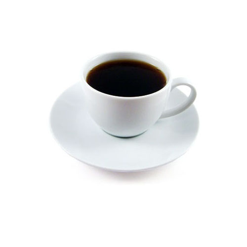

|  |
Caffe Mocha
- Caffe Mocha
-
A Caffe Mocha , also called mocaccino , is a chocolate-flavored variant of a caffe latte. Other commonly used spellings are mochaccino and also mochachino. The name is derived from the city of Mocha, Yemen, which was one of the centers of early coffee trade.
Ingredients
- Chocolate
- Espresso
- Hot milk
Back to Menu |